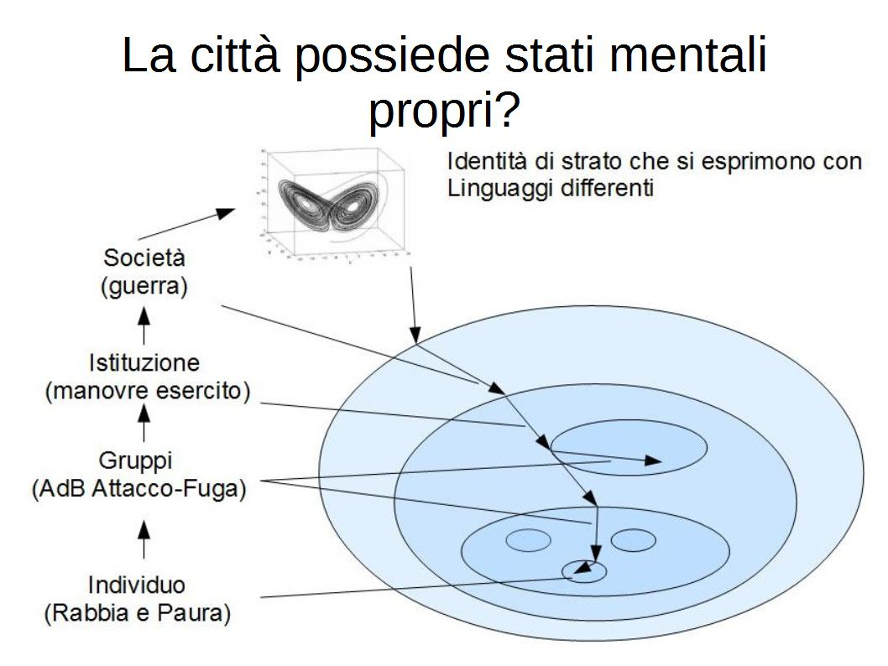
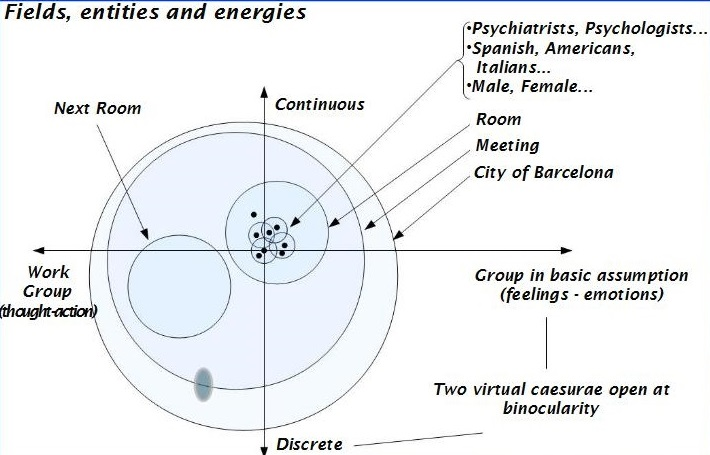
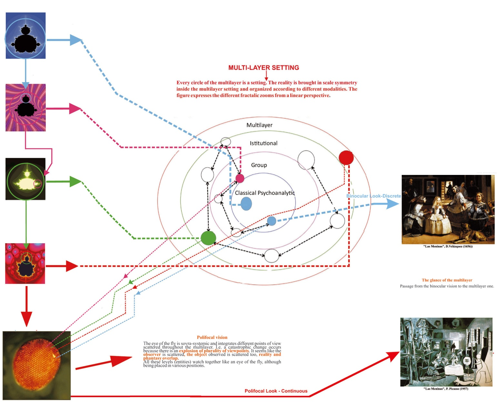

Provo a mitigare il titolo di un workshop che mi è sembrato fin dall'inizio provocatoriamente parziale e violento, seppur in fondo vero.
Se colloco in un punto reale la "Città Psicotica", al suo Zenit, magari lungo l’asse del desiderio che la trasporta fin dentro il mio cervello, incontro necessariamente la sua controparte complementare ed inscindibile, cioè il suo modello idealizzato: la "Città del Sole". Non quella ovvia e kitsch di mare, clima e canzoni, ma quella contenuta, per esempio, nell'Utopia Immaginaria di un nostro conterraneo del vicereame di Napoli di quattrocento anni fa: Tommaso Campanella (1568 - 1639)(1), imprigionato nelle segrete del Maschio Angioino dall'Inquisizione. Triste destino che, come Bion ci insegna, qualunque establishment più o meno riserva ai suoi visionari anticipatori di scomode verità.
È di questo tipo di spazio, quello mentale, fantastico, utopico (allargandolo magari dal cervello di Campanella a quello del nostro gruppo al lavoro a cento metri dalla sua prigione) che provo a parlare, collocandovi e collegandovi il materiale che in genere studio: brandelli associativi, spezzoni di idee, di storie, di emozioni, residui sensoriali o di sogni, aggregati, organi ipocondriaci, magari trasportati dalle oscillazioni emotive che scorrono nella relazione tra uno Zenit ed un Nadir; tra una Città psicotica e una Città del sole; cioè tra la dolorosa esperienza di una pratica quotidiana ed una impossibile utopia.
Il mestiere che svolgo non mi abilita a proporre nel reale possibilità pratiche di soluzione del disagio urbano di tipo tecnico, economico o politico (tutti punti di vista naturalmente necessari nell'affrontare il problema). Mi limiterò quindi, e non lo ritengo inutile, a cercare di descrivere, da punti di vista particolari, lo spazio mentale collettivo come un serbatoio emozionale e culturale dentro cui gli aggregati antropologici (le tribù umane vecchie e nuove) producono miti e riti per tollerare e gestire la loro quotidianità difficile in uno spazio entro cui esse si sognano, per elaborare i loro desideri e frustrazioni. Potremo chiamarle, queste pratiche sociali rituali, forme di terapia e/o tentativi di ricerca di una nuova identità gruppale che possa conferire alla tribù autoctona un maggiore potere contrattuale nei confronti sia delle regole, sia dei messaggi paradossali imposti dai bisogni e dagli interessi dei sovra-sistemi politici e sociali colonizzatori.
Occupandomi io del metabolismo di passioni e miti, il mio linguaggio non potrà essere quello del tecnico, dell’economista, del politico; cioè un linguaggio oggettivo che necessariamente, per esempio, iscrive una rosa in un trattato di botanica. Il linguaggio da usare nel mio caso, per condensare il massimo di informazioni possibili, per lo più emozionali, utili al mio scopo (che starà poi al fruitore riorganizzare), è quello evocativo: cioè descrivere la rosa per esempio in una poesia o il suo profumo in un sogno.
Con questo tipo di linguaggio lo spazio mentale che metto a fuoco potrebbe trasformarsi ad esempio in una camera iperbarica onirica trans-culturale; un involucro magico che, incubandole, trasformi le pressioni insostenibili di una realtà caotica, in sogni e miti addirittura salvifici, e che, come la terapia iperbarica, possa indurre percorsi trasformativi. Un serbatoio di inestimabile ricchezza di giacimenti e residui culturali: uno spazio di comprensione i cui modelli derivano da un approccio psicoanalitico antropologico che origina dal Freud di Totem e Tabù, Psicologia delle masse, Disagio della Civiltà, il Futuro di un'illusione, e per quanto mi riguarda passa per il Bion di Esperienze nei Gruppi, Apprendere dall'Esperienza, Attenzione e Interpretazione, Gli elementi della psicoanalisi, Trasformazioni.
La tribù che accede così alla sua nuova possibilità di sognare e raccontare se stessa attraverso questa nuova funzione, può iniziare a ri-strutturare una propria identità e una propria cultura, distillando da queste il suo pensiero logico, magari latore in futuro di sue proprie proposte scientifiche e politiche risolutive: autoctone, non importate dall'esterno e perciò non colonizzanti. E questo però già non è più compito mio!
Come stimolo alla discussione il mio intervento consisterà nel proporre gli otto interrogativi che mi sono posto ed a cui ho provato a dare alcune risposte non definitive: le mie, quindi parziali ed aperte. Parlerò quindi dei vertici, modelli, metodi, strumenti e dispositivi da cui esse sono derivate. Sono quelli che comunque il mio gruppo ora adopera per la sua ricerca sui grandi gruppi e sulle istituzioni.
1 - Che c’entra la Psicoanalisi con la città psicotica?
Una città può essere stesa sul lettino come suggerisce, un po’ ludicamente, Laurent Petit per evidenziarne sia l’immaginario sociale che le contraddizioni dei suoi sintomi comportamentali?
Affronto le perplessità degli psicoanalisti più classici, restii ad uscire dalla stanza, e degli scienziati e politici del disagio urbano più razionalmente duri e puri, che trattano le emozioni come chiacchiere, e mi chiedo: può la psicoanalisi giocare i suoi fondamentali in un campo più allargato e complesso del suo setting classico? Vincere cioè la sua agorafobia, se non teorica per lo meno pratica, esprimere un suo punto di vista operativo e stimolare una pensabilità psicoanalitica.
Non sto parlando naturalmente di terapia, anche se talvolta le ricadute positive possono non mancare, ma di proposizione di modelli di comprensione derivati dall’impatto diretto che, come sua abitudine, essa istituisce con le realtà emotive sconosciute che si propone di esplorare. Qualcosa che riguardi non solo la teorizzazione antropologica ma anche la pratica sociale. Penso che perché ciò accada siano necessarie alcune trasformazioni elastiche per adattare il valore invariante dei fondamentali alle deformazioni topologiche dei nuovi contesti mentali plurali.
La Psicoanalisi è una sonda per esplorare, dice Bion illustrandoci il suo continuo processo K → O, cioè Conoscenza verso Ineffabile. Può risultare allora buona questa sonda per esplorare universi diversi da quelli del setting classico, che condividono però, magari potremmo dire in scala frattalica, problematiche simili?
Da diverse decine di anni pur continuando come Psicoanalista SPI/IPA ad occuparmi, con modalità classiche, di pazienti individuali o di gruppi terapeutici, mi sono sentito attratto dall’esplorazione di spazi mentali propri di sistemi più ampi (piccoli gruppi, grandi gruppi, istituzioni, sistemi di istituzioni).
Ho cercato di creare e mantenere, in questa esplorazione, un vertice psicoanalitico lavorando con la psicosi e con le sue istituzioni (manicomio, servizi territoriali, cliniche private); il che mi ha portato inevitabilmente ad uscire dalla stanza di analisi per andare ad attivare, nei nuovi contesti, dinamiche gruppali atte a far entrare il grande gruppo in contatto anche con suoi stati di coscienza più profondi, potrei chiamarli quasi di cenestesi onirica.
Ciò come risvolto contemporaneo all'attività gruppo di lavoro che si svolgeva, ad esempio, in assemblee, gruppi di supervisioni cliniche, gruppi terapeutici o di apprendimento. Lo scopo era di provare a trasformare sia queste realtà fattuali istituzionali, sia magari la loro immagine nel sociale (ad es. come potrebbe diventare una nuova psichiatria). Cioè trasportare le problematiche osservate all'interno dei punti di vista di una possibile pensabilità analitica.
Ho cercato di allargare il metodo psicoanalitico per indagare e confrontarmi con macro-gruppalità istituzionali e sociali, cercando di stimolare e partecipare al nascere di una funzione analitica.
Questa per me è stata: il cogliere cioè nel campo il nascere di un soggetto-gruppo che si interroga sul suo sperimentarsi come unisono; partecipare al suo senso gruppale, al suo movimento di autocoscienza identificativa, sia nel suo insieme e sia nei suoi individui componenti (K→O): cioè chi sono/siamo? Cosa faccio/facciamo? Sperimentare cioè la qualità dell’individuarsi come unità collettiva e come tale divenire in grado di rispondersi (Ps → D).
Ciò diveniva possibile se, al di là delle modalità verbali che veicolavano la comunicazione del gruppo di lavoro, riuscivo ad utilizzare, per me e per gli altri, quel potente mezzo di comunicazione affettiva primitiva che è l'identificazione proiettiva; la fusionalità circolare del percorso Io/Voi/Noi.
Le gruppalità in cui sono state utilizzate queste forme di comprensione esperienziale, tese a conoscersi e sperimentarsi come contenitore più che ad apprendere contenuti, erano prevalentemente rivolte alla formazione o alla terapia: formazione del personale sanitario, con corsi di aggiornamento; l’insegnamento universitario – sia a Medicina che a Psicologia – con piccoli gruppi di specializzandi o grandi gruppi di studenti; nei quartieri per lo studio delle interrelazioni tra le istituzioni locali e il lavoro di salute mentale; gruppi di lavoro di insegnanti per la gestione del drop-out scolastico in quartieri disagiati.
Con e dentro questa ottica il gruppo presto trascendeva, pur non abbandonandoli, gli obiettivi pragmatici istituzionali per concentrarsi sui suoi interrogativi ontologici (guardare non tanto la difficoltà a produrre come gruppo di lavoro, ma quella di stare insieme per produrre, ciò per via degli assunti di base). Metodi, tecniche e percorsi clinici sono stati analiticamente raccolti insieme e pubblicati.
È attualmente in corso una ricerca sulle contraddizioni ed il burn-out che il sistema sociale e le sue burocrazie inducono in alcune istituzioni sanitarie territoriali che si confrontano con varie forme di disagio psichico.
2 - Enti istituzionali, periferie urbane, centri storici possiedono un’identità collettiva e spazi mentali propri?
Il disagio urbano è un vissuto di malessere e, come tale, viene contenuto ed esperito all’interno di uno spazio mentale. Paura, degrado, rabbia non vengono percepiti solo dagli individui singoli ma anche dai loro insiemi; questi stati d’animo anzi, quando condivisi, tendono a favorire la coesione delle specifiche identità collettive che li condividono (quartiere, città, cultura, tribù).
La psicoanalisi che si occupa di gruppi (Freud, Bion, Anzieu, Corrao, Kaes) considera acclarato che gli insiemi umani siano dotati di strutture identitarie collettive che permettano anche attività mentali sovra-sistemiche indipendenti rispetto a quelle possedute dai singoli individui loro componenti(6); sviluppino cioè, anche in proprio, abbozzi di pensiero e strategie, provino emozioni, costruiscano miti. Tali attività mentali trans-personali, non necessariamente coscienti, sarebbero funzioni emergenti dell’agglutinarsi degli individui umani in sistemi gruppali più complessi che si costituiscono, magari sotto la spinta etologica di animali sociali, sia con una vita propria (come ad esempio uno sciame d’api che gli etologi descrivono come un super-organismo(7)), sia con il legarsi dei loro apparati mentali a creare identità ed atmosfere proprie (ad esempio gruppi, istituzioni, città, nazioni). La figura illustra come in enti sovra-sistemici, con identità di strato più complesse, lo stesso tipo di emozione possa essere organizzato ed esperito con caratteristiche differenti.

Stiamo individuando e delimitando, naturalmente semplificandolo, uno spazio mentale esterno ai singoli individui, perlomeno finché non viene re-introiettato, ed uno interno alle mura reali o virtuali che li riuniscono in comunità separandoli da un altrove. In questo spazio la città come tale vive ed esperisce il dolore del contatto con la sua psicosi, ad esempio con le differenti gruppalità che, frammentate, conflittualmente popolano il suo spazio sociale: i suoi gruppi, le sue organizzazioni, le sue istituzioni, i suoi campi sociali e culturali, i suoi individui, etc… come enti definiti dotati di logiche proprie spesso conflittuali tra di loro (ad esempio polizia e malavita).
Il collante che lega emozionalmente la collettività è qualcosa che Bion ha descritto come una Valenza Chimica nel descrivere gli Assunti di Base gruppali: Dipendenza, Attacco-Fuga ed Accoppiamento. Cioè i campi emotivi che permettono la sopravvivenza di un insieme gruppale e la sua propagazione nello spazio-tempo (Gruppo in Assunto di Base). Ciò che lega invece la collettività dal punto di vista della pratica di vita è la logica economica della capacità collaborativa nella pratica di lavoro per l’ottenimento di un qualche prodotto (Gruppo di Lavoro)(8).
Il problema reale di una periferia, di una bidonville, di una favela è quello di non riuscire a fornire altro che un ambiente deprivato per lo sviluppo e la sopravvivenza dei suoi abitanti. Ma al livello dello sviluppo mentale autoctono di questi aggregati sociali, il problema è quello della difficoltà di produrre una loro cultura e un’ identità locale che non vengano costantemente sviliti e repressi dalla cultura colonizzante del sovra-sistema. È questo, forse, che li rende territori psicotizzabili.
Abbiamo finora individuato campi emozionali dentro gli individui oppure tra gli individui ma dentro la città; oppure nel sovra-sistema esterno alla città; come cellule all’interno di un tessuto a sua volta dentro un organismo. Questi campi risultano costantemente in relazione tra loro attraverso la permeabilità osmotica dei loro confini sintopici.
3 - Sono ipotizzabili modelli psicoanalitici di gruppo per lo studio della “città psicotica”?
Osservare una Città Psicotica o porzioni di essa (Istituzioni, Gruppi, periferie urbane, assemblee elettive, organizzazioni politiche, malavitose, culturali, etc.) in cui Campi, Enti ed Energie si esprimono anche come portatori di attività psichica, è una attività molto complessa. In essa gli “Io” dei singoli cittadini vengono inglobati e legati a partecipare alla formazione di un loro “Noi” complesso con le modalità dis-identificative fusionali tipiche delle masse(9).
All’interno di questa organizzazione dovrebbero allora guidare l’indagine interrogativi come: chi è che osserva? Cosa osserva e dove? Da quale punto di vista? Come e dove integra e ricostruisce le informazioni?
Per rispondervi ho provato a costruirmi(10) modelli di comprensione psicoanalitici derivandoli dai concetti bioniani di Contenitore/Contenuto, di Oscillazione Ps↔D, di Vertice, di Binocularità, di Trasformazioni e di applicarli alla realtà complessa delle pratiche sociali in questo tipo di macro-gruppalità.
Ho chiamato “Insieme Multistrato Complesso”(11) ed “Occhio della Mosca”(12) due modelli teorici che, partendo dal valore del punto di vista (vertice), indicano un metodo di osservazione ed indagine globale. Il loro utilizzo permette di reintegrare, in una struttura di senso, fenomeni dinamici frammentari dispersi nei punti di vista plurimi dei componenti di un gruppo.
Ne voglio indicare tre che chiarirò poi con un esempio:
- L’Organizzazione Multilivello della materia-energia e la possibilità di mettere a fuoco in essa (magari anche contemporaneamente) ad ingrandimenti diversi, livelli diversi della stessa realtà.
- La Visione Poli-oculare (Occhio della Mosca): a differenza di quella monoculare costruisce ed integra una realtà bidimensionale (cioè sul piano); quella binoculare costruisce una realtà prospettica (cioè nello spazio tridimensionale); la realtà integrata e ricostruita dalla poli-ocularità degli innumerevoli punti di vista presenti, quando il soggetto osservante è una gruppalità, costruisce invece un iperspazio complesso, a-cronico ed a-topico, che può essere contenuto, senza confusione o delirio, solo in un sogno o, magari, in un quadro di Picasso(13). La Città Psicotica si ri-costruisce in un iperspazio complesso pieno di sconcertanti spiazzamenti logici da far felice Italo Calvino.
- L'Oscillazione molteplicità/unità: la realtà dell’Io binoculare e la realtà del Noi poli-oculare contemporaneamente presenti, possono darsi dinamicamente anche in una oscillazione diacronica presentificandosi come una pulsazione fra il punto di vista globale della città unitaria e quello del molteplice disseminato negli svariati punti di vista dei suoi sottosistemi costituenti (istituzioni, quartieri, gruppi, individui).

Stiamo parlando di due stati di coscienza: al consueto stato di coscienza vigile dell’Io, che ordina ed orienta linearmente i dati dell’esperienza, aggiungiamo, ad un altro livello, uno stato di coscienza proprio del Noi. L’esperienza policentrica della moltitudine, in questo campo sovrasistemico collettivo, può essere unitariamente integrata dall’entità gruppo solo con modalità oniroidi (ad es. costruzione di un mito) o con modalità psicotiche (ad es. costruzione di un delirio).
Se caliamo lo stato di coscienza dell’Io in quello della massa, questo scompare per insignificanza. All’inverso, il pervasivo stato di coscienza plurale del Noi non può essere ristretto come tale nei limiti di una mente individuale; la fa scoppiare o perlomeno sabota il suo funzionamento ottimale, inducendo un allineamento regressivo alla condizione di confusione primaria (D → Ps).
L’osservazione della materia, energia e organizzazione del nostro workshop qui ed ora, può servire da esemplificazione (vedi figure) sia dei multilivelli e sia della poli-ocularità.
Un insieme così complesso, esperito da menti individuali e collettive collocate su vari livelli, non può che ingenerare confusioni interconnesse fra di loro: la confusione della città psicotica; la confusione del nostro campo multietnico e multidisciplinare al lavoro; la confusione della pluralità di tutti questi dati sensoriali esperiti contemporaneamente nella nostra mente. È questo che io chiamo Transfert Sincronico(14).
Cerchiamo di vedere come possiamo orientare questo magma confusivo in una direzione di integrazione che Bion chiamerebbe PS → D, in cui può essere possibile ri-cavarne un senso.

4 - Cos’è l’apparato proto-mentale? La Città Psicotica ne possiede uno?
Le confusioni di cui abbiamo appena parlato ci mettono in contatto con un’attività psichica non ancora pensabile, sia per mancanza di una struttura-contenitore che abbia già raggiunto, al suo interno, la qualità adeguata a farlo, e sia per la non processabilità di un massiccio e dispersivo accumulo di contenuti, tutti equipollenti, in cui non sia stato possibile ancora selezionare informazioni pertinenti da un rumore di fondo. Per uno psicoanalista è ovvio che non tutto il mentale è pensiero o coscienza. Forse questo è l’inconscio di una città.
Bion ha ipotizzato come proto-mentale, partendo proprio dai gruppi, il ricchissimo deposito di attività psichica primitiva non ancora direzionata, toti-potenzialmente disponibile; qualcosa di biologicamente ed etologicamente radicato nelle nostre origini come presupposti proto-mentali della nostra appartenenza di specie. Qualcosa imparentato con il freudiano inconscio non rimosso. Questo spazio potrebbe essere l’inconscio gruppale in cui la città cova i suoi malesseri, in parallelo a come gli individui covano le loro psicosi. Esso si configura come un deposito di elementi grezzi, mentalizzabili, con radici nel corpo, nel sensoriale, nella storia, nella specie.
Residui sensoriali come caldo/freddo o luce/buio, sensazioni corporee, immagini primitive, frammenti di vissuti somatici o di materia organica, frammenti e tracce di ricordi, emozioni primitive come bene/male, piacere/dolore, in attesa di qualcosa che permetta loro di legarsi in una narrazione. Stiamo esplorando uno spazio all’origine del pensiero, che Bion chiama funzione Alfa, oppure del pensiero gruppale, che Corrao chiama funzione Gamma. Frammenti non ancora organizzati da strutture logiche per ricevere senso, in questo luogo di toti-potenzialità.
La condizione potrebbe essere quella di un neonato bombardato dall’esplosione di apporto percettivo multimodale che allaga caoticamente i suoi spazi mentali con le più diverse mobilizzazioni senso-percettive. Oppure quella di un’orchestra che accordi gli strumenti prima che entri il direttore a costruire il senso. Oppure questa sala, Babele multiculturale, prima che un oratore provi a costruire un filo.
Se estendiamo il concetto, provando ad uscire fuori da quella porta in strada, possiamo forse incontrare il “non senso” della Città Psicotica per come noi la studiamo: il suo malessere. Il concetto è naturalmente estendibile agli ulteriori sovra-sistemi (multistrato), alla nazione, al mondo e via via fino alle macchie solari che ci potrebbero influenzare il clima.
Il magma proto-mentale è per Bion anche il luogo in cui refluisce la potenzialità degli assunti di base non attivi al momento, cioè gli stati emotivi che costantemente orientano il gruppo come tale a crearsi le condizioni per la sopravvivenza ideale e futura sua e della specie. Un crocevia psico-somatico in cui si sovrappongono, sia nel cervello dell’uomo che nella mente gruppale, le emozioni ed i comportamenti regolati dalla biologia dei nuclei ipotalamici: la fame, il nutrirsi, il freddo, il ricovero, l’accudimento, la produzione del latte (tutti da far risalire all’assunto di base Dipendenza); l’attacco, la rabbia, la fuga, la paura, la caccia, la difesa del territorio e del gruppo (da far risalire all’Attacco-Fuga); ed infine il procreare allargando il territorio biologico del gruppo nello spazio-tempo attraverso la riproduzione (Accoppiamento).
È un calderone dove frammenti di fisica e biologia si mescolano con un'attività mentale non ancora resa esperibile o pensabile per mancanza di maturità del soggetto deputato a farlo. Il luogo dove il gruppo incuba per la sua sopravvivenza frammenti di sogni e miti e significanti simbolici ancora privi di significati; immagini e grugniti, in un clivaggio tra il fisico e il mentale. Al confine dello psicosomatico.
5 - Cos'è il Genius Loci? Potrebbe essere la cerniera psico-somatica tra una popolazione ed il suo habitat?
Quando una popolazione trova una sua terra promessa e vi si stabilisce per crescere e prosperare, crea con essa un profondo legame che si estende in dimensioni biologiche, etologiche ed affettive. Il contenitore geografico viene investito a vari livelli dal metabolismo organico, dalla vitalità biologica e dalla gratitudine psichica del suo contenuto umano fino a trasformarsi ed assurgere da habitat, etologicamente segnato dai prodotti (sia cataboliti che creazioni) della nuova specie stanziale, alla condizione emozionale di “Madre Patria”.
I dati e le caratteristiche del Sito, ed il suo donarsi come Habitat, impregnano la sensorialità del sistema proto-mentale del gruppo, da cui vengono assorbiti divenendone elementi costituenti. Una proto-mentalizzazione, cioè, nel cervello gruppale del sito che determinerà le direttrici di sviluppo evolutivo dell'uno e dell'altro.
Gli adattamenti del gruppo al Sito e la sua trasformazione creativa per adattarlo a sua volta ai bisogni del gruppo (il costruirselo ad hoc), creano quella che Maturana e Varela chiamano una relazione di accoppiamento strutturale(18). Vengono così costruite le dinamiche dell'abitare tra il contenuto e il contenitore, l'uomo ed i suoi gusci (casa, città, territorio). Un gruppo pensa e progetta un sito e lo trasforma; questo, a sua volta trasformandosi dinamicamente, induce come feedback una modificazione nella capacità del gruppo di pensarlo e la sua qualità del progettarlo.
Si forma così un nuovo ecosistema dinamico. Il brulichìo vitale di questo sistema lo anima (si crea un'anima) e lo possiede (si da un corpo). Il proto-mentale, mentre lo fa suo, fa vivere il corpo geografico del sito creando una vera e propria connessione psicosomatica; una cerniera tra l'immaginario della città all'interno della mentalizzazione del gruppo e la attiva capacità trasformativa sull'habitat che esso opera attraverso gli scambi metabolici e i traffici reali (biologia del sito come ecosistema, costruzione urbanistica della città).
Sto parlando di un'unità corpo/mente, un circuito strutturante in cui un corpo contiene e sviluppa una mente che, a sua volta, lo contiene pensandolo. È una relazione fusionale creativa di amore e bellezza (nella Città del Sole) ma anche, per converso, di dominio e schiavitù (nella Città Psicotica).
Qualcosa di simile alla relazione di reciproca crescita affettiva (con benesseri e malesseri connessi) tra un corpo materno e il bambino che contiene (anche mentalmente); oppure, ad un livello più regressivo, tra un utero e il feto che contiene (anche proto-mentalmente).
È in questo circuito dinamico psico-somatico, in cui le caratteristiche dell'habitat come proprio corpo vengono elaborate dal proto-mentale del gruppo, che origina e prende forma il Genius Loci.
Claudio Neri(19) lo ha magistralmente descritto come una funzione che, nell'immaginario del piccolo gruppo terapeutico, costruisce personaggi e luoghi benevoli, evolutivi, che si prendono cura di una funzione di protezione e benessere presumibilmente connessa con l’assunto di base Dipendenza. Io provo ad estendere le caratteristiche di questa funzione nel grande gruppo antropologico, a livelli più arcaici connessi col proto-mentale tutto, compresi gli assunti di base Attacco-Fuga e Accoppiamento e le loro connessioni biologiche con lo psico-somatico. Con questi allargamenti vedremo che lo scenario diviene più drammatico.
Il Genius Loci di una città è quindi un coagulo di gruppo/sito: quel qualcosa che fa dello spirito di Napoli una città marinara; Essen o Pittsburgh sono città minerarie; Londra una city commerciale; Cortina una città del tempo libero; Tijuana una città di confine. Una necessità geografica che plasma ed indirizza lo spirito del gruppo che vi risiede e ne aiuta e stimola l'adattamento all'utilizzo ottimale del sito per la crescita della sua identità e fattività. Per cui il contesto psico-somatico dello spirito delle arnie di questa valle di agrumeti non può che produrre miele d'arancio, mentre quello della valle vicina magari miele di rose.
Accenno solo al Genius Loci depressivo tipico della città compatta e tradizionalmente cinta da mura. L’amico è dentro il nemico è fuori, per cui esso presiede a transazioni precise tra individui con ruoli definiti. Il Genius Loci schizo-paranoide invece, tipico della megalopoli attuale, è disperso in uno spazio senza confini, tra periferie inglobate e metropolitane mai nate; esso si muove tra non luoghi (nel senso di Marc Augè) e non riesce mai a capire se è tra amici o persecutori(20).
6 - È necessaria la violenza per la sopravvivenza? Cosa sono gli Assunti di Base?
Abbiamo visto come il vissuto enterocettivo di un dato corpo (dei muscoli, del cuore, del cervello) impregni, con le sue specifiche caratteristiche e limiti, lo spazio proto-mentale dell'individuo che lo anima e ne condizioni, in termini psico-somatici, gli sviluppi evolutivi. Similmente un sito geografico, trasformato in habitat dalla relazione con le specie che accoglie, impregna con i suoi vincoli e caratteristiche il proto-mentale del suo gruppo stanziale che lo vive, innerva e digerisce come dato posseduto (il mare, il fiume, i nodi stradali, le miniere, la terra fertile, il confine).
Stiamo osservando una specie di relazione psico-somatica in cui, come una mente emozionata mette in moto trasformazioni biologiche del corpo, così un gruppo, psico-dinamicamente, diviene in grado di trasformare, costruendolo, l’Habitat (ad esempio una città) che lo ospita; le trasformazioni a valle di questo influenzano poi a loro volta, attraverso i feedback, il modo di essere e di viversi in quel luogo della mente e del gruppo.
Partecipano a questa relazione dinamica i depositi proto-mentali storico-esperienziali derivati dai bisogni e fantasie primarie del gruppo, o magari addirittura della specie, essenziali per mantenere la tribù coesa, ad esempio: le sue origini, gli avi, gli dei, le battaglie, le persecuzioni, i miti prelogici, il viaggio iniziatico attraverso il mare o il deserto, il sacrificio del messia.
A quanto detto si aggiungono le profonde condizioni emozionali inespresse depositate dagli assunti di base nel proto-mentale del gruppo. L'accoppiamento strutturale del materiale del sito con questi residui caotici presenti nel proto-mentale gruppale origina il Genius Loci che, come uno spirito direzionante, organizza la declinazione fattuale delle caratteristiche operative del gruppo.
Stati d’animo così primitivi, connessi con la vita, la morte, il sesso (come quelli organizzati dagli assunti di base) gestiscono, nella dinamica tra contenitore e contenuto (Habitat/Genius Loci), emozioni violente come la fame, il possesso, la gelosia, l’invidia, la rapina, la rabbia, la lotta, lo stupro, la distruzione, l’odio, la speranza, l’orgia. Queste vengono, dalla gruppalità disciolta in massa, gestiti con rituali per produrre magari abbozzi di istituzioni destinate fantasticamente a contenerle e collocarle nella realtà.
È così, forse, che si forma e declina l’urbanistica di una città modulata dalle specifiche qualità dei suoi bisogni e delle sue passioni.
Si istituisce cioè una complessa relazione contenitore/contenuto in cui una Città contiene un Gruppo che, a sua volta, contiene il sogno della sua Città in evoluzione dinamica.
Stiamo guardando ora il Genius Loci come campo dinamico prodotto dalla relazione contenitore/contenuto che si è istituita tra proto-mentale gruppale dentro il sito e, per converso, le caratteristiche che assume il sito dentro il proto-mentale del gruppo.
Mi pare logico che questa complessità ci porti dentro un campo caotico e quindi re-incontriamo la confusione: siamo Noi (ad esempio i napoletani) il contenitore della Città Psicotica che cerchiamo di pensare, oppure siamo solo uno dei confusi contenuti di lei come sovrasistema?
7 - Quale dispiegamento assume la relazione contenitore/contenuto violenta sui vari scenari?
A) Nella Malattia Psicosomatica e nella "Città Psicotica".
Penso che siamo tutti d’accordo sul convenire che non c’è nulla di peggio di un amore infelice. Un ossimoro che condensa l’esperienza dell’ambivalenza.
Tale è quello tra un Genius Loci ed un Sito che lo genera da una instabile geologia, costantemente oscillante tra eruzioni, terremoti e bradisismi, come le colonne del tempio sotto la spinta della vendetta di Sansone.
Un Habitat sempre provvisorio questo tra trasformazioni naturali di cataclismi vari, sotto la cappa minacciosa di una estinzione piro-clastica.
Oppure figlio della dipendenza frustrata, evacuata a sua volta, attraverso fuochi fatui e percolati, nel seno gabinetto di una terra esaurita dai rabbiosi veleni che, re-introiettati, provocheranno cancri e mutazioni genetiche.
Senza nessuna rêvèrie da parte di sovra-sistemi orientati istituzionalmente non a risolvere i problemi ma a trarne vantaggio in proprio.
L'odio di un popolo realisticamente affamato, deluso dal fantasma di un benessere inesistente, si sfoga nel circuito infantile dell'avidità e dell'invidia autodistruttiva attaccando la Madre Terra e le sue istituzioni incapaci.
Il Genius Loci rabbioso, assorbito nella psicologia indifferenziata della massa per l’assenza di capacità istituzionale organizzativa, si ribella, odia e distrugge il suo corpo-Habitat geografico; questo a sua volta si prepara a seppellirlo divorandolo in un abbraccio velenosamente mortale.
Una malattia psicosomatica autoimmune in cui un Sito, con contorsioni animalesche, cerca di espellere e uccidere il parassita predatore umano, che lo rode, avvelena e distrugge con l’odio del non sentirsi a sua volta accolto e desiderato come vorrebbe.
Questa tempestosa relazione contenitore/contenuto, ambivalentemente passionale, piena di amore e violenza, instaura la psicopatologia di una relazione psicosomatica di una mente insoddisfatta che odia e fa ammalare il proprio corpo; oppure quella mitologia passionale costruita sulla relazione ambivalente di un popolo con l’Habitat vitale che lo accoglie, nutre e perseguita (ad esempio quella dei Maori costantemente accolti ed espulsi dalle loro isole vulcaniche).
È in questo apocalittico scenario, mediaticamente condiviso dal nostro mondo più o meno civilizzato, che è possibile studiare e sperimentare precocemente in Napoli, città avanguardia e laboratorio, le modalità ingenuamente primitive con cui un popolo cerca di risolvere con coraggio, lealtà e senso di giustizia, le sue contraddizioni attuali, antesignane del futuro che, a poco a poco, possiamo già intravedere riguarderà tutto il Mondo.
Stiamo parlando di quella storia d’amore deluso e di violenza distruttiva tra Contenitore e Contenuto: un corpo e una mente nella malattia psico-somatica; quella storia che si duplica nel rapporto passionale tra Genius Loci ed Habitat nel gruppo psicotico in una città psicotica parte, a sua volta, di un mondo che si avvia alla psicotizzazione.
B) In un piccolo gruppo terapeutico.
Entro in uno spazio in cui mi trovo più a mio agio per indagare meglio, ma ad un altro livello, di quali passioni stiamo parlando.
La relazione drammatica tra Contenitori e Contenuti mi è apparsa particolarmente chiara nei sogni, le libere associazioni e le storie di un piccolo gruppo terapeutico.
In questo campo energetico otto spazi mentali individuali, più il mio, interagiscono fondendosi.
Le storie, gli enti (oggetti totali e parziali) e le energie passionali hanno, in questa fase dell'analisi all’ombra della dipendenza, a che fare con differenti sentimenti: la gratitudine e l’amore per la capacità generativa e protettiva dei contenitori; la paura e l’invidia per la distruttività dei contenuti che può lesionare i contenitori, rendendoli così odiosamente persecutori e invertendo il loro compito. Naturalmente anche il reciproco viene adeguatamente elaborato.
Tre sogni portati in una seduta fondono, a vari livelli, i rispecchiamenti libero-associativi delle storie dei vari partecipanti, tutti profondamente coinvolti col tema.
Il Sogno di Ba) Sono nell'abitazione di una mia carissima amica d'infanzia. Era immersa nel verde, su due piani, accogliente. Collocata sulla parte più stretta di un lago, dove le rive quasi combaciano. L'acqua tra esse correva veloce come verso una "cascata". Ero sola nella casa immersa nel silenzio della notte. All'improvviso sento dei rumori e due o tre loschi figuri penetrano con l'intenzione di usarmi violenza. Sento il terrore, ma miracolosamente riesco a scappare e raggiungo il mare e la dogana. Tutto era buio tranne l'acqua del mare, illuminata, che scivolava via veloce. Bene, ero al sicuro, scampato pericolo. Dico alla mia amica: la casa è accogliente ma può essere violata facilmente.
Il Sogno di Sa) Ero nell'enoteca di mio padre, tra gli scaffali prendevo alcuni prodotti alimentari tra cui dell'olio biologico, una sua truffa, da portare in vacanza; era presente anche mia madre. Poi ero sull'uscio della porta di una casa antica dove c'erano alcuni uomini che avevano un piccolo baule con all'interno una persona tagliata a pezzi. Non avevo partecipato alla cosa ma mi sentivo coinvolta nella situazione. Gli uomini dovevano sbarazzarsi del baule, usciti in strada c'erano delle persone che guardavano il baule. Sapevo che saremmo stati denunciati.
Il Sogno di Ro) Sono in anticamera con la psicologa che ha appena finito la sua analisi di formazione nel gruppo. Ha fatto molti progressi, è brava e sento molta ammirazione ed invidia per lei che è riuscita a prendere molto e per Guelfo e ciò che è riuscito a darle.
Nell'altra stanza, Guelfo è in consultazione con una coppia di infermieri, che lavorano con me. Prima del loro matrimonio, lui ha avuto un infelice matrimonio con un'altra, terminato il quale ho capito che avrebbe gradito una storia omosessuale con me; io ci giocavo ma mi sentivo molto a disagio. Ora con la moglie hanno un bellissimo figlio. La psicologa mi dice: "perché li hai mandati da Guelfo per gratitudine. Non ti sei accorto che è un uomo di merda?"
Possiamo considerare come libere associazioni ai sogni l’insieme problematico del racconto di sé che ognuno ha fatto nel gruppo. In fondo questo è il materiale comune da cui sgorga un sogno nel gruppo.
Ba) Figlia unica ha trascorso la sua infanzia in una casa costantemente pericolante e disastrata per le fantasie di seduzioni incestuose che la pervadevano. Una madre, costantemente in bilico dalla finestra da cui alla fine si è buttata, che la dominava giocando con lei come con una Barbie delegandole la sua sessualità. Un padre contemporaneamente abbandonico e seduttivo (alla fine però sempre dalla parte della madre). La sua adolescenza è stata attraversata da fantasie di violenze sessuali. A causa di una menopausa precoce non ha avuto il figlio che desiderava. Ne incolpa il marito sempre troppo pigro al momento opportuno. Ha adottato dei fratellini stranieri con cui è una mamma perfetta che si sente sempre in colpa. È entrata in crisi quando il più grande di loro ha minacciato di buttarsi dalla finestra.
Sa) Ha grande capacità riparativa, studia psicologia e lavora o ha lavorato al sostegno a scuola e in istituzioni con pazienti psicotici. I bambini di cui si occupa, comprese le figlie, la amano, la deludono, la stancano. Sullo sfondo la pena per una sorella psicotica. Sta attraversando un disturbo psico-somatico intestinale connesso con l’elaborazione di colpa per un aborto (forse intollerabile figlio del Transfert?) ed una competitività con il marito per la paura di sentirlo virilmente superiore, quindi violentatore. Sullo sfondo un padre violento vissuto come intrallazzatore.
La) Giovane universitaria, ultima venuta al gruppo ed in procinto forse di andarsene, si vive la totale assenza della famiglia attorno a sé. Un padre e una madre separati da tempo che si sono sempre traditi e fratelli, troppo più grandi di lei, nata da un fallimentare tentativo di riconciliazione. “Nessuno mi vuole, non servo a nessuno”. Scappa continuamente dalla casa di una mamma che non vuole, e che non la vuole, facendola preoccupare per i suoi comportamenti sessuali. Sente che non esiste perché forse non lo merita.
Fa) È un’ottima pediatra perennemente in ribellione con il suo ospedale, le sue figlie universitarie, il suo uomo attuale, e la sua famiglia di provenienza da cui si è sempre sentita svalutata. Lotta con amore e competenza contro le malattie di tutti ma si sente colpevole di un’invadenza che la fa sentire sempre rifiutata.
Ro) È un medico che con timidezza e gentilezza si vive una solitudine ed una omosessualità infelice. Generoso, oblativo con la sua posizione economica non riesce a far valere la sua competenza e valore sia nel campo professionale che in quello affettivo.
Vo) Si percepisce come vegetante, soffocato dal vissuto di sopraffazioni, nei velenosi climi ambientali affettivamente paralizzanti, sia nella famiglia di origine, sia in quella attuale, sia nel lavoro di ingegnere in un ente, sia nel gruppo. Sembra non riuscire mai a mettersi a fuoco per dirsi: “Eccomi; io ci sono”.
Co) Si vive il dolore di un bambino (ma forse anche quello della madre) nato fuori dal matrimonio, che il padre a tre anni sottrae alla madre naturale e porta in una famiglia con una nuova madre e fratelli molto più grandi di lui.
Bo) È l’ultimo arrivato e se ne andrà precocemente folgorato da una prematura guarigione. Lavora nel supermercato di famiglia e conduce una vita infantile e regolare. Comincia ad avere crisi di panico quando realizza di dover essere figlio adottivo perché sua madre in una gravidanza precedente ha perso non solo il bambino ma anche l’utero. Si sente ingannato dalla menzogna familiare. Dopo due mesi di analisi riesce ad esternare questo dubbio ai suoi e scopre che la menzogna è stata per proteggerlo e che comunque è figlio del padre che lo ha avuto con un’altra donna. Ci lascia dichiarandosi soddisfatto dei chiarimenti e perciò guarito, con il dubbio però che chissà i suoi da che altro vorranno proteggerlo.
Queste differenti storie aggregano un caotico campo multilivello che fonde spazio-tempi di dimensioni e qualità differenti, con gli oggetti in essi disseminati. Il gruppo contiene, magmaticamente interconnessi, sogni, frammenti di storie, fantasie, sintomi. Proviamo a riordinare e classificare gli oggetti che abbiamo osservato e le loro energie per dimensioni e livelli; in modo che alla fine ognuno dei partecipanti possa riprendersi, riorganizzata, la propria fetta della storia comune che lo riguarda.
Allora incontriamo i costituenti frammentati delle loro storie: capezzoli che secernono latte avariato; bocche affamate; vagine e peni che si violentano e divorano, amandosi appassionatamente, tra orgia e paura; uteri fatti a pezzi con dentro bambini fatti a pezzi; madri e figli annichiliti, strappati l’uno all’altro, che non riescono ad abbracciarsi e a scambiarsi il dolore della perdita; coppie che non riescono a procreare; velenosa invidia per chi procrea e paura di essere incapace a farlo, ad essere uomo, ad essere donna, ad essere cittadino.
Sullo sfondo più ampio si ordina in multistrato la serialità conflittuale tra contenitori e contenuti: vagine che contengono peni; uteri/feti; madri/bambini; corpi/menti; Istituzioni/padri; famiglie e gruppi/individui; Città/abitanti; Habitat/specie.
Ed è la stessa passione rabbiosa e tradita che attraversa tutti questi livelli e da ognuno ci coinvolge: da bambino affamato, figlio abbandonato, amante tradito, adolescente che brucia una periferia.
Ogni livello ed ogni individuo può ora riprendersi la sua storia sentendosi, a buon diritto, una parte integrata in un tutto. Nel vissuto di transfert la fantasia comune è quella di un gruppo che frantuma ed abortisce ideali bambini, molto invidiosi e molto amati, che non ha ancora capito se è capace di far nascere o abortire.
Io sto a guardare, grato per il regalo di esperienza comprensiva che il gruppo ha messo nel mio cervello per fargli partorire lo scritto sulla “Città Psicotica”. Restituisco allora quanto penso, ricevendone in cambio l’orgoglio e la gratitudine per aver fatto parte del commando scientifico, con cui loro mi autorizzano ad usare la loro storia come metafora delle interazioni emotive ai livelli più arcaici della città.
8 - Che fare?
È il momento di porsi l’interrogativo-imperativo leninista, però con molti più dubbi e tolleranze verso i nostri limiti. Assolutamente scettici cioè sul fatto che, alla fine, il futuro possa dipendere dal nostro, seppur volenteroso, intervento.
La proposta psicoanalitica, come al solito sul piano dell'agire, non può che essere molto passiva: stare a guardare come si riorganizza il campo durante e dopo la tempesta.
Ma già avere un luogo da cui guardare, insieme all’accorgersi di essere guardati con rispetto, possono essere direttrici di risposte.
Credo che la proposta psicoanalitica debba essere quella di proporre e creare luoghi dentro cui gli accadimenti possano essere esperiti e pensati.
Sto invitando alla costante organizzazione di Setting, scenari d'incontro pubblici, in cui la creatività popolare possa prodursi esprimendo emozioni e storie che riflettano e possano permettere di riflettere. Una funzione identitaria catartico-sociale per certi versi simile a quella del Teatro Greco Classico.
Penso che sia anche importante una sorta di non interventismo, evitare intempestive soluzioni etero-dirette dai sovrasistemi, che in genere servono solo ai colonizzatori a far freneticamente circolare finanziamenti.
Attendere invece, con quella pazienza che Bion chiama capacità negativa, il formarsi e maturare, con stupore e curiosità, all'interno dello stesso gruppo, dell'idea adeguata.
Non forzare soluzioni ma attivare campi ideativi che facciano emergere pensieri creativi.
Questo mi ricorda l'apologo Zen in cui il maestro regala all'affamato allievo non il pesce desiderato ma una lenza.
Gli dona una sgradita via d'uscita dalla dipendenza: ora è lui che dovrà nutrirsi e crescere da solo per sempre.
Ritengo "Curiosità" e "Tolleranza" fattori fondamentali per una crescita, non solo terapeutica ma anche personale.
Una crescita dialetticamente aperta nella direzione della "Cultura".
Mi auguro che i nostri gruppi di lavoro, oggi, possano fare l'esperienza, nonostante la confusione, di poterle esercitare e sovrapporre in una fusione che potremmo chiamare: capacità di "Convivenza".
Ciò potrebbe permetterci di comprenderci, poi comprendere e forse addirittura di esportare la comprensione alla "Città Psicotica".
note
Campanella T., (1602) La Città del Sole, Laterza, Bari 2011.
Petit L., La ville sur le divan, Le Contre Allèe, Paris, 2013.
Chi volesse approfondire questi aspetti può rifarsi a: Margherita G., Il calcio alla gabbia, ed 10/17, Salerno, 1997; Margherita G., L'insieme multistrato, Armando, Roma, 2012; cfr. anche il sito www.thecomplexmultilayerset.com
Margherita G., La funzione analitica in contesti gruppali non terapeutici, Koinos - Gruppo e funzione analitica, XXXI, n. 2, 2011.
Margherita G., op. cit. 2012
Cfr. ad esempio Bion W. R. (1961), Esperienze nei gruppi, Armando, Roma, 1971.
Holldobler B., Wilson E. O., The superorganism: the beauty, the elegance and strangeness of insect societies, W. W. Norton, 2008.
Bion, op. cit. 1961.
G. Margherita, S. Rotondi, F. Verde, Massa Protomentale e massa in assunto di base, Koinos – Gruppo e Funzione Analitica, XXXI, n.2, 92, 2010.
G. Margherita, op. cit. 2012
G. Margherita, Il transfert sincronico nel “Multistrato Complesso”. Tuffo multilivello nello spazio-tempo istituzionale, Koinos – Gruppo e Funzione Analitica, XXVIII, n. 1-2, 29, 2007.
G. Margherita, The eye of the fly: psychoanalytic Gestalten and chaotic attractors in large groups and institutions, Chaos and complexity letters, IV, n. 3, 113, 2011.
G. Margherita, S. Rotondi, F. Verde, O. Braucci, R. Di Biase, S. Loffredo, F. Pone, Institution as a chaotic setting, International Convention “Mind force matrix of human evolution”, Università di Siena, 7-8 Ottobre 2010.
Per la chiarificazione dei concetti di: Transfert Sincronico, Setting Multistrato e Interpretazione Agita, cfr. Glossario del sito: www.thecomplexmultilayerset.com
Bion, op. Cit., 1961.
Vedi in Bion, Cogitations, London: Karnac Books, 1992.
F. Corrao (1981), Struttura poliadica e funzione gamma, in Id., Orme, Raffaello Cortina, Milano, 1998.
Maturana, F. J. Varela (1980), Autopoiesis and Cognition: The Realization of the Living.
Claudio Neri, Genius loci: lo spirito di un posto, di un gruppo, Funzione Gamma, 7, 2001.
Cfr. G. Margherita, Metropoli schizoparanoide, in Mazzoleni D. “La città e l'immaginario”, Officina, Napoli, 1985.
Cfr, Margherita, Rotondi, Verde op. Cit. 2010
Confronta gli atti del convegno in corso di pubblicazione.